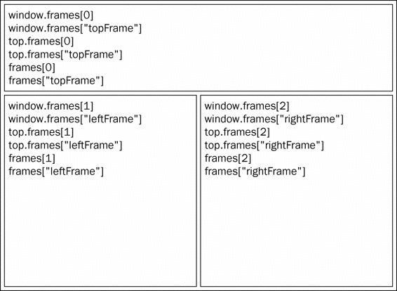
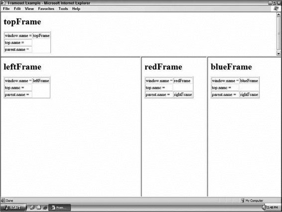
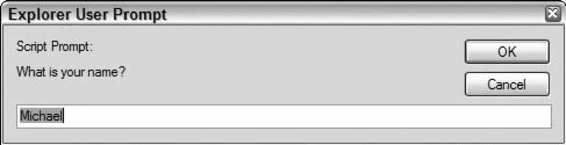
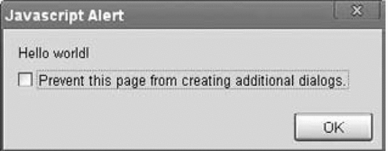

BOM的核心对象是window，它表示浏览器的一个实例。在浏览器中，window对象有双重角色，它既是通过JavaScript访问浏览器窗口的一个接口，又是ECMAScript规定的Global对象。这意味着在网页中定义的任何一个对象、变量和函数，都以window作为其Global对象，因此有权访问parseInt()等方法。
由于window对象同时扮演着ECMAScript中Global对象的角色，因此所有在全局作用域中声明的变量、函数都会变成window对象的属性和方法。来看下面的例子。
var age = 29;
function sayAge(){
alert(this.age);
}
alert(window.age); //29
sayAge(); //29
window.sayAge(); //29
我们在全局作用域中定义了一个变量age和一个函数sayAge()，它们被自动归在了window对象名下。于是，可以通过window.age访问变量age，可以通过window.sayAge()访问函数sayAge()。由于sayAge()存在于全局作用域中，因此this.age被映射到window.age，最终显示的仍然是正确的结果。
抛开全局变量会成为window对象的属性不谈，定义全局变量与在window对象上直接定义属性还是有一点差别：全局变量不能通过delete操作符删除，而直接在window对象上的定义的属性可以。例如：
var age = 29;
window.color = "red";
//在IE < 9 时抛出错误，在其他所有浏览器中都返回false
delete window.age;
//在IE < 9 时抛出错误，在其他所有浏览器中都返回true
delete window.color; //returns true
alert(window.age); //29
alert(window.color); //undefined
DeleteOperatorExample01.htm
刚才使用var语句添加的window属性有一个名为[[Configurable]]的特性，这个特性的值被设置为false，因此这样定义的属性不可以通过delete操作符删除。IE8及更早版本在遇到使用delete删除window属性的语句时，不管该属性最初是如何创建的，都会抛出错误，以示警告。IE9及更高版本不会抛出错误。
另外，还要记住一件事：尝试访问未声明的变量会抛出错误，但是通过查询window对象，可以知道某个可能未声明的变量是否存在。例如：
//这里会抛出错误，因为oldValue未定义
var newValue = oldValue;
//这里不会抛出错误，因为这是一次属性查询
//newValue的值是undefined
var newValue = window.oldValue;
本章后面将要讨论的很多全局JavaScript对象（如location和navigator）实际上都是window对象的属性。
Windows Mobile平台的IE浏览器不允许通过
window.property = value之类的形式，直接在window对象上创建新的属性或方法。可是，在全局作用域中声明的所有变量和函数，照样会变成window对象的成员。
如果页面中包含框架，则每个框架都拥有自己的window对象，并且保存在frames集合中。在frames集合中，可以通过数值索引（从0开始，从左至右，从上到下）或者框架名称来访问相应的window对象。每个window对象都有一个name属性，其中包含框架的名称。下面是一个包含框架的页面：
<html>
<head>
<title>Frameset Example</title>
</head>
<frameset rows="160,*">
<frame src="frame.htm" name="topFrame">
<frameset cols="50%,50%">
<frame src="anotherframe.htm" name="leftFrame">
<frame src="yetanotherframe.htm" name="rightFrame">
</frameset>
</frameset>
</html>
FramesetExample01.htm
以上代码创建了一个框架集，其中一个框架居上，两个框架居下。对这个例子而言，可以通过window.frames[0]或者window.frames["topFrame"]来引用上方的框架。不过，恐怕你最好使用top而非window来引用这些框架（例如，通过top.frames[0]）。
我们知道，top对象始终指向最高（最外）层的框架，也就是浏览器窗口。使用它可以确保在一个框架中正确地访问另一个框架。因为对于在一个框架中编写的任何代码来说，其中的window对象指向的都是那个框架的特定实例，而非最高层的框架。图8-1展示了在最高层窗口中，通过代码来访问前面例子中每个框架的不同方式。

图 8-1
与top相对的另一个window对象是parent。顾名思义，parent（父）对象始终指向当前框架的直接上层框架。在某些情况下，parent有可能等于top；但在没有框架的情况下，parent一定等于top（此时它们都等于window）。再看下面的例子。
<html>
<head>
<title>Frameset Example</title>
</head>
<frameset rows="100,*">
<frame src="frame.htm" name="topFrame">
<frameset cols="50%,50%">
<frame src="anotherframe.htm" name="leftFrame">
<frame src="anotherframeset.htm" name="rightFrame">
</frameset>
</frameset>
</html>
frameset1.htm
这个框架集中的一个框架包含了另一个框架集，该框架集的代码如下所示。
<html>
<head>
<title>Frameset Example</title>
</head>
<frameset cols="50%,50%">
<frame src="red.htm" name="redFrame">
<frame src="blue.htm" name="blueFrame">
</frameset>
</html>
anotherframeset.htm
浏览器在加载完第一个框架集以后，会继续将第二个框架集加载到rightFrame中。如果代码位于redFrame（或blueFrame）中，那么parent对象指向的就是rightFrame。可是，如果代码位于topFrame中，则parent指向的是top，因为topFrame的直接上层框架就是最外层框架。图8-2展示了在将前面例子加载到浏览器之后，不同window对象的值。

图 8-2
注意，除非最高层窗口是通过window.open()打开的（本章后面将会讨论），否则其window对象的name属性不会包含任何值。
与框架有关的最后一个对象是self，它始终指向window；实际上，self和window对象可以互换使用。引入self对象的目的只是为了与top和parent对象对应起来，因此它不格外包含其他值。
所有这些对象都是window对象的属性，可以通过window.parent、window.top等形式来访问。同时，这也意味着可以将不同层次的window对象连缀起来，例如window.parent.parent.frames[0]。
Global对象。在每个框架中定义的全局变量会自动成为框架中window对象的属性。由于每个window对象都包含原生类型的构造函数，因此每个框架都有一套自己的构造函数，这些构造函数一一对应，但并不相等。例如，top.Object并不等于top.frames[0].Object。这个问题会影响到对跨框架传递的对象使用instanceof操作符。
用来确定和修改window对象位置的属性和方法有很多。IE、Safari、Opera和Chrome都提供了screenLeft和screenTop属性，分别用于表示窗口相对于屏幕左边和上边的位置。Firefox则在screenX和screenY属性中提供相同的窗口位置信息，Safari和Chrome也同时支持这两个属性。Opera虽然也支持screenX和screenY属性，但与screenLeft和screenTop属性并不对应，因此建议大家不要在Opera中使用它们。使用下列代码可以跨浏览器取得窗口左边和上边的位置。
var leftPos = (typeof window.screenLeft == "number") ?
window.screenLeft : window.screenX;
var topPos = (typeof window.screenTop == "number") ?
window.screenTop : window.screenY;
WindowPositionExample01.htm
这个例子运用二元操作符首先确定screenLeft和screenTop属性是否存在，如果是（在IE、Safari、Opera和Chrome中），则取得这两个属性的值。如果不存在（在Firefox中），则取得screenX和screenY的值。
在使用这些值的过程中，还必须注意一些小问题。在IE、Opera和Chrome中，screenLeft和screenTop中保存的是从屏幕左边和上边到由window对象表示的页面可见区域的距离。换句话说，如果window对象是最外层对象，而且浏览器窗口紧贴屏幕最上端——即y轴坐标为0，那么screenTop的值就是位于页面可见区域上方的浏览器工具栏的像素高度。但是，在Firefox和Safari中，screenY或screenTop中保存的是整个浏览器窗口相对于屏幕的坐标值，即在窗口的y轴坐标为0时返回0。
更让人捉摸不透是，Firefox、Safari和Chrome始终返回页面中每个框架的top.screenX和top.screenY值。即使在页面由于被设置了外边距而发生偏移的情况下，相对于window对象使用screenX和screenY每次也都会返回相同的值。而IE和Opera则会给出框架相对于屏幕边界的精确坐标值。
最终结果，就是无法在跨浏览器的条件下取得窗口左边和上边的精确坐标值。然而，使用moveTo()和moveBy()方法倒是有可能将窗口精确地移动到一个新位置。这两个方法都接收两个参数，其中moveTo()接收的是新位置的x和 y坐标值，而moveBy()接收的是在水平和垂直方向上移动的像素数。下面来看几个例子：
//将窗口移动到屏幕左上角
window.moveTo(0,0);
//将窗向下移动100像素
window.moveBy(0,100);
//将窗口移动到(200,300)
window.moveTo(200,300);
//将窗口向左移动50像素
window.moveBy(-50,0);
需要注意的是，这两个方法可能会被浏览器禁用；而且，在Opera和IE 7（及更高版本）中默认就是禁用的。另外，这两个方法都不适用于框架，只能对最外层的window对象使用。
跨浏览器确定一个窗口的大小不是一件简单的事。IE9+、Firefox、Safari、Opera和Chrome均为此提供了4个属性：innerWidth、innerHeight、outerWidth和outerHeight。在IE9+、Safari和Firefox中，outerWidth和outerHeight返回浏览器窗口本身的尺寸（无论是从最外层的window对象还是从某个框架访问）。在Opera中，这两个属性的值表示页面视图容器1的大小。而innerWidth和innerHeight则表示该容器中页面视图区的大小（减去边框宽度）。在Chrome中，outerWidth、outerHeight与innerWidth、innerHeight返回相同的值，即视口（viewport）大小而非浏览器窗口大小。
1 这里所谓的“页面视图容器”指的是Opera中单个标签页对应的浏览器窗口。
IE8及更早版本没有提供取得当前浏览器窗口尺寸的属性；不过，它通过DOM提供了页面可见区域的相关信息。
在IE、Firefox、Safari、Opera和Chrome中，document.documentElement.clientWidth和document.documentElement.clientHeight中保存了页面视口的信息。在IE6中，这些属性必须在标准模式下才有效；如果是混杂模式，就必须通过document.body.clientWidth和document.body. clientHeight取得相同信息。而对于混杂模式下的Chrome，则无论通过document.documentElement还是document.body中的clientWidth和clientHeight属性，都可以取得视口的大小。
虽然最终无法确定浏览器窗口本身的大小，但却可以取得页面视口的大小，如下所示。
var pageWidth = window.innerWidth,
pageHeight = window.innerHeight;
if (typeof pageWidth != "number"){
if (document.compatMode == "CSS1Compat"){
pageWidth = document.documentElement.clientWidth;
pageHeight = document.documentElement.clientHeight;
} else {
pageWidth = document.body.clientWidth;
pageHeight = document.body.clientHeight;
}
}
WindowSizeExample01.htm
在以上代码中，我们首先将window.innerWidth和window.innerHeight的值分别赋给了pageWidth和pageHeight。然后检查pageWidth中保存的是不是一个数值；如果不是，则通过检查document.compatMode（这个属性将在第10章全面讨论）来确定页面是否处于标准模式。如果是，则分别使用document.documentElement.clientWidth和document.documentElement.clientHeight的值。否则，就使用document.body.clientWidth和document.body.clientHeight的值。
对于移动设备，window.innerWidth和window.innerHeight保存着可见视口，也就是屏幕上可见页面区域的大小。移动IE浏览器不支持这些属性，但通过document.documentElement.clientWidth和document.documentElement.clientHeihgt提供了相同的信息。随着页面的缩放，这些值也会相应变化。
在其他移动浏览器中，document.documentElement度量的是布局视口，即渲染后页面的实际大小（与可见视口不同，可见视口只是整个页面中的一小部分）。移动IE浏览器把布局视口的信息保存在document.body.clientWidth和document.body.clientHeight中。这些值不会随着页面缩放变化。
由于与桌面浏览器间存在这些差异，最好是先检测一下用户是否在使用移动设备，然后再决定使用哪个属性。
另外，使用resizeTo()和resizeBy()方法可以调整浏览器窗口的大小。这两个方法都接收两个参数，其中resizeTo()接收浏览器窗口的新宽度和新高度，而resizeBy()接收新窗口与原窗口的宽度和高度之差。来看下面的例子。
//调整到100×100
window.resizeTo(100, 100);
//调整到200×150
window.resizeBy(100, 50);
//调整到 300×300
window.resizeTo(300, 300);
需要注意的是，这两个方法与移动窗口位置的方法类似，也有可能被浏览器禁用；而且，在Opera和IE7（及更高版本）中默认就是禁用的。另外，这两个方法同样不适用于框架，而只能对最外层的window对象使用。
使用window.open()方法既可以导航到一个特定的URL，也可以打开一个新的浏览器窗口。这个方法可以接收4个参数：要加载的URL、窗口目标、一个特性字符串以及一个表示新页面是否取代浏览器历史记录中当前加载页面的布尔值。通常只须传递第一个参数，最后一个参数只在不打开新窗口的情况下使用。
如果为window.open()传递了第二个参数，而且该参数是已有窗口或框架的名称，那么就会在具有该名称的窗口或框架中加载第一个参数指定的URL。看下面的例子。
//等同于< a href="http://www.wrox.com" target="topFrame"></a>
window.open("http://www.wrox.com/", topFrame");
调用这行代码，就如同用户单击了href属性为http://www.wrox.com/，target属性为"topFrame"的链接。如果有一个名叫"topFrame"的窗口或者框架，就会在该窗口或框架加载这个URL；否则，就会创建一个新窗口并将其命名为"topFrame"。此外，第二个参数也可以是下列任何一个特殊的窗口名称：_self、_parent、_top或_blank。
1. 弹出窗口
如果给window.open()传递的第二个参数并不是一个已经存在的窗口或框架，那么该方法就会根据在第三个参数位置上传入的字符串创建一个新窗口或新标签页。如果没有传入第三个参数，那么就会打开一个带有全部默认设置（工具栏、地址栏和状态栏等）的新浏览器窗口（或者打开一个新标签页——根据浏览器设置）。在不打开新窗口的情况下，会忽略第三个参数。
第三个参数是一个逗号分隔的设置字符串，表示在新窗口中都显示哪些特性。下表列出了可以出现在这个字符串中的设置选项。
| 设 置 | 值 | 说 明 |
|---|---|---|
fullscreen |
yes或no |
表示浏览器窗口是否最大化。仅限IE |
height |
数值 | 表示新窗口的高度。不能小于100 |
left |
数值 | 表示新窗口的左坐标。不能是负值 |
location |
yes或no |
表示是否在浏览器窗口中显示地址栏。不同浏览器的默认值不同。如果设置为no，地址栏可能会隐藏，也可能会被禁用（取决于浏览器） |
menubar |
yes或no |
表示是否在浏览器窗口中显示菜单栏。默认值为no |
resizable |
yes或no |
表示是否可以通过拖动浏览器窗口的边框改变其大小。默认值为no |
scrollbars |
yes或no |
表示如果内容在视口中显示不下，是否允许滚动。默认值为no |
status |
yes或no |
表示是否在浏览器窗口中显示状态栏。默认值为no |
toolbar |
yes或no |
表示是否在浏览器窗口中显示工具栏。默认值为no |
top |
数值 | 表示新窗口的上坐标。不能是负值 |
width |
数值 | 表示新窗口的宽度。不能小于100 |
表中所列的部分或全部设置选项，都可以通过逗号分隔的名值对列表来指定。其中，名值对以等号表示（注意，整个特性字符串中不允许出现空格），如下面的例子所示。
window.open("http://www.wrox.com/","wroxWindow",
"height=400,width=400,top=10,left=10,resizable=yes");
这行代码会打开一个新的可以调整大小的窗口，窗口初始大小为400×400像素，并且距屏幕上沿和左边各10像素。
window.open()方法会返回一个指向新窗口的引用。引用的对象与其他window对象大致相似，但我们可以对其进行更多控制。例如，有些浏览器在默认情况下可能不允许我们针对主浏览器窗口调整大小或移动位置，但却允许我们针对通过window.open()创建的窗口调整大小或移动位置。通过这个返回的对象，可以像操作其他窗口一样操作新打开的窗口，如下所示。
var wroxWin = window.open("http://www.wrox.com/","wroxWindow",
"height=400,width=400,top=10,left=10,resizable=yes");
//调整大小
wroxWin.resizeTo(500,500);
//移动位置
wroxWin.moveTo(100,100);
调用close()方法还可以关闭新打开的窗口。
wroxWin.close();
但是，这个方法仅适用于通过window.open()打开的弹出窗口。对于浏览器的主窗口，如果没有得到用户的允许是不能关闭它的。不过，弹出窗口倒是可以调用top.close()在不经用户允许的情况下关闭自己。弹出窗口关闭之后，窗口的引用仍然还在，但除了像下面这样检测其closed属性之外，已经没有其他用处了。
wroxWin.close(); alert(wroxWin.closed); //true
新创建的window对象有一个opener属性，其中保存着打开它的原始窗口对象。这个属性只在弹出窗口中的最外层window对象（top）中有定义，而且指向调用window.open()的窗口或框架。例如：
var wroxWin = window.open("http://www.wrox.com/","wroxWindow",
"height=400,width=400,top=10,left=10,resizable=yes");
alert(wroxWin.opener == window); //true
虽然弹出窗口中有一个指针指向打开它的原始窗口，但原始窗口中并没有这样的指针指向弹出窗口。窗口并不跟踪记录它们打开的弹出窗口，因此我们只能在必要的时候自己来手动实现跟踪。
有些浏览器（如IE8和Chrome）会在独立的进程中运行每个标签页。当一个标签页打开另一个标签页时，如果两个window对象之间需要彼此通信，那么新标签页就不能运行在独立的进程中。在Chrome中，将新创建的标签页的opener属性设置为null，即表示在单独的进程中运行新标签页，如下所示。
var wroxWin = window.open("http://www.wrox.com/","wroxWindow",
"height=400,width=400,top=10,left=10,resizable=yes");
wroxWin.opener = null;
将opener属性设置为null就是告诉浏览器新创建的标签页不需要与打开它的标签页通信，因此可以在独立的进程中运行。标签页之间的联系一旦切断，将没有办法恢复。
2. 安全限制
曾经有一段时间，广告商在网上使用弹出窗口达到了肆无忌惮的程度。他们经常把弹出窗口打扮成系统对话框的模样，引诱用户去点击其中的广告。由于看起来像是系统对话框，一般用户很难分辨是真是假。为了解决这个问题，有些浏览器开始在弹出窗口配置方面增加限制。
Windows XP SP2中的IE6对弹出窗口施加了多方面的安全限制，包括不允许在屏幕之外创建弹出窗口、不允许将弹出窗口移动到屏幕以外、不允许关闭状态栏等。IE7则增加了更多的安全限制，如不允许关闭地址栏、默认情况下不允许移动弹出窗口或调整其大小。Firefox 1从一开始就不支持修改状态栏，因此无论给window.open()传入什么样的特性字符串，弹出窗口中都会无一例外地显示状态栏。后来的Firefox 3又强制始终在弹出窗口中显示地址栏。Opera只会在主浏览器窗口中打开弹出窗口，但不允许它们出现在可能与系统对话框混淆的地方。
此外，有的浏览器只根据用户操作来创建弹出窗口。这样一来，在页面尚未加载完成时调用window.open()的语句根本不会执行，而且还可能会将错误消息显示给用户。换句话说，只能通过单击或者击键来打开弹出窗口。
对于那些不是用户有意打开的弹出窗口，Chrome采取了不同的处理方式。它不会像其他浏览器那样简单地屏蔽这些弹出窗口，而是只显示它们的标题栏，并把它们放在浏览器窗口的右下角。
3. 弹出窗口屏蔽程序
大多数浏览器都内置有弹出窗口屏蔽程序，而没有内置此类程序的浏览器，也可以安装Yahoo! Toolbar等带有内置屏蔽程序的实用工具。结果就是用户可以将绝大多数不想看到弹出窗口屏蔽掉。于是，在弹出窗口被屏蔽时，就应该考虑两种可能性。如果是浏览器内置的屏蔽程序阻止的弹出窗口，那么window.open()很可能会返回null。此时，只要检测这个返回的值就可以确定弹出窗口是否被屏蔽了，如下面的例子所示。
var wroxWin = window.open("http://www.wrox.com", "_blank");
if (wroxWin == null){
alert("The popup was blocked!");
}
如果是浏览器扩展或其他程序阻止的弹出窗口，那么window.open()通常会抛出一个错误。因此，要想准确地检测出弹出窗口是否被屏蔽，必须在检测返回值的同时，将对window.open()的调用封装在一个try-catch块中，如下所示。
var blocked = false;
try {
var wroxWin = window.open("http://www.wrox.com", "_blank");
if (wroxWin == null){
blocked = true;
}
} catch (ex){
blocked = true;
}
if (blocked){
alert("The popup was blocked!");
}
PopupBlockerExample01.htm
在任何情况下，以上代码都可以检测出调用window.open()打开的弹出窗口是不是被屏蔽了。但要注意的是，检测弹出窗口是否被屏蔽只是一方面，它并不会阻止浏览器显示与被屏蔽的弹出窗口有关的消息。
JavaScript是单线程语言，但它允许通过设置超时值和间歇时间值来调度代码在特定的时刻执行。前者是在指定的时间过后执行代码，而后者则是每隔指定的时间就执行一次代码。
超时调用需要使用window对象的setTimeout()方法，它接受两个参数：要执行的代码和以毫秒表示的时间（即在执行代码前需要等待多少毫秒）。其中，第一个参数可以是一个包含JavaScript代码的字符串（就和在eval()函数中使用的字符串一样），也可以是一个函数。例如，下面对setTimeout()的两次调用都会在一秒钟后显示一个警告框。
//不建议传递字符串！
setTimeout("alert('Hello world!') ", 1000);
//推荐的调用方式
setTimeout(function() {
alert("Hello world!");
}, 1000);
TimeoutExample01.htm
虽然这两种调用方式都没有问题，但由于传递字符串可能导致性能损失，因此不建议以字符串作为第一个参数。
第二个参数是一个表示等待多长时间的毫秒数，但经过该时间后指定的代码不一定会执行。JavaScript是一个单线程序的解释器，因此一定时间内只能执行一段代码。为了控制要执行的代码，就有一个JavaScript任务队列。这些任务会按照将它们添加到队列的顺序执行。setTimeout()的第二个参数告诉JavaScript再过多长时间把当前任务添加到队列中。如果队列是空的，那么添加的代码会立即执行；如果队列不是空的，那么它就要等前面的代码执行完了以后再执行。
调用setTimeout()之后，该方法会返回一个数值ID，表示超时调用。这个超时调用ID是计划执行代码的唯一标识符，可以通过它来取消超时调用。要取消尚未执行的超时调用计划，可以调用clearTimeout()方法并将相应的超时调用ID作为参数传递给它，如下所示。
//设置超时调用
var timeoutId = setTimeout(function() {
alert("Hello world!");
}, 1000);
//注意：把它取消
clearTimeout(timeoutId);
TimeoutExample02.htm
只要是在指定的时间尚未过去之前调用clearTimeout()，就可以完全取消超时调用。前面的代码在设置超时调用之后马上又调用了clearTimeout()，结果就跟什么也没有发生一样。
this的值在非严格模式下指向window对象，在严格模式下是undefined。
间歇调用与超时调用类似，只不过它会按照指定的时间间隔重复执行代码，直至间歇调用被取消或者页面被卸载。设置间歇调用的方法是setInterval()，它接受的参数与setTimeout()相同：要执行的代码（字符串或函数）和每次执行之前需要等待的毫秒数。下面来看一个例子。
//不建议传递字符串！
setInterval ("alert('Hello world!') ", 10000);
//推荐的调用方式
setInterval (function() {
alert("Hello world!");
}, 10000);
IntervalExample01.htm
调用setInterval()方法同样也会返回一个间歇调用ID，该ID可用于在将来某个时刻取消间歇调用。要取消尚未执行的间歇调用，可以使用clearInterval()方法并传入相应的间歇调用ID。取消间歇调用的重要性要远远高于取消超时调用，因为在不加干涉的情况下，间歇调用将会一直执行到页面卸载。以下是一个常见的使用间歇调用的例子。
var num = 0;
var max = 10;
var intervalId = null;
function incrementNumber() {
num++;
//如果执行次数达到了max设定的值，则取消后续尚未执行的调用
if (num == max) {
clearInterval(intervalId);
alert("Done");
}
}
intervalId = setInterval(incrementNumber, 500);
IntervalExample02.htm
在这个例子中，变量num每半秒钟递增一次，当递增到最大值时就会取消先前设定的间歇调用。这个模式也可以使用超时调用来实现，如下所示。
var num = 0;
var max = 10;
function incrementNumber() {
num++;
//如果执行次数未达到max设定的值，则设置另一次超时调用
if (num < max) {
setTimeout(incrementNumber, 500);
} else {
alert("Done");
}
}
setTimeout(incrementNumber, 500);
TimeoutExample03.htm
可见，在使用超时调用时，没有必要跟踪超时调用ID，因为每次执行代码之后，如果不再设置另一次超时调用，调用就会自行停止。一般认为，使用超时调用来模拟间歇调用的是一种最佳模式。在开发环境下，很少使用真正的间歇调用，原因是后一个间歇调用可能会在前一个间歇调用结束之前启动。而像前面示例中那样使用超时调用，则完全可以避免这一点。所以，最好不要使用间歇调用。
浏览器通过alert()、confirm()和prompt()方法可以调用系统对话框向用户显示消息。系统对话框与在浏览器中显示的网页没有关系，也不包含HTML。它们的外观由操作系统及（或）浏览器设置决定，而不是由CSS决定。此外，通过这几个方法打开的对话框都是同步和模态的。也就是说，显示这些对话框的时候代码会停止执行，而关掉这些对话框后代码又会恢复执行。
本书各章经常会用到alert()方法，这个方法接受一个字符串并将其显示给用户。具体来说，调用alert()方法的结果就是向用户显示一个系统对话框，其中包含指定的文本和一个OK（“确定”）按钮。例如，alert("Hello world!")会在Windows XP系统的IE中生成如图8-3所示的对话框。
通常使用alert()生成的“警告”对话框向用户显示一些他们无法控制的消息，例如错误消息。而用户只能在看完消息后关闭对话框。
第二种对话框是调用confirm()方法生成的。从向用户显示消息的方面来看，这种“确认”对话框很像是一个“警告”对话框。但二者的主要区别在于“确认”对话框除了显示OK按钮外，还会显示一个Cancel（“取消”）按钮，两个按钮可以让用户决定是否执行给定的操作。例如，confirm("Are you sure?")会显示如图8-4所示的确认对话框。
 |
||
| 图 8-3 | 图 8-4 |
为了确定用户是单击了OK还是Cancel，可以检查confirm()方法返回的布尔值：true表示单击了OK，false表示单击了Cancel或单击了右上角的X按钮。确认对话框的典型用法如下。
if (confirm("Are you sure?")) {
alert("I'm so glad you're sure! ");
} else {
alert("I'm sorry to hear you're not sure. ");
}
在这个例子中，第一行代码（if条件语句）会向用户显示一个确认对话框。如果用户单击了OK，则通过一个警告框向用户显示消息I’m so glad you’ re sure! 。如果用户单击的是Cancel按钮，则通过警告框显示I’m sorry to hear you’re not sure.。这种模式经常在用户想要执行删除操作的时候使用，例如删除电子邮件。
最后一种对话框是通过调用prompt()方法生成的，这是一个“提示”框，用于提示用户输入一些文本。提示框中除了显示OK和Cancel按钮之外，还会显示一个文本输入域，以供用户在其中输入内容。prompt()方法接受两个参数：要显示给用户的文本提示和文本输入域的默认值（可以是一个空字符串）。调用prompt("What's your name?","Michael")会得到如图8-5所示的对话框。

图 8-5
如果用户单击了OK按钮，则prompt()返回文本输入域的值；如果用户单击了Cancel或没有单击OK而是通过其他方式关闭了对话框，则该方法返回null。下面是一个例子。
var result = prompt("What is your name? ", "");
if (result !== null) {
alert("Welcome, " + result);
}
综上所述，这些系统对话框很适合向用户显示消息并请用户作出决定。由于不涉及HTML、CSS或JavaScript，因此它们是增强Web应用程序的一种便捷方式。
除了上述三种对话框之外，Google Chrome浏览器还引入了一种新特性。如果当前脚本在执行过程中会打开两个或多个对话框，那么从第二个对话框开始，每个对话框中都会显示一个复选框，以便用户阻止后续的对话框显示，除非用户刷新页面（见图8-6）。

图 8-6
如果用户勾选了其中的复选框，并且关闭了对话框，那么除非用户刷新页面，所有后续的系统对话框（包括警告框、确认框和提示框）都会被屏蔽。Chrome没有就对话框是否显示向开发人员提供任何信息。由于浏览器会在空闲时重置对话框计数器，因此如果两次独立的用户操作分别打开两个警告框，那么这两个警告框中都不会显示复选框。而如果是同一次用户操作会生成两个警告框，那么第二个警告框中就会显示复选框。这个新特性出现以后，IE9和Firefox 4也实现了它。
还有两个可以通过JavaScript打开的对话框，即“查找”和“打印”。这两个对话框都是异步显示的，能够将控制权立即交还给脚本。这两个对话框与用户通过浏览器菜单的“查找”和“打印”命令打开的对话框相同。而在JavaScript中则可以像下面这样通过window对象的find()和print()方法打开它们。
//显示“打印”对话框
window.print();
//显示“查找”对话框
window.find();
这两个方法同样不会就用户在对话框中的操作给出任何信息，因此它们的用处有限。另外，既然这两个对话框是异步显示的，那么Chrome的对话框计数器就不会将它们计算在内，所以它们也不会受用户禁用后续对话框显示的影响。